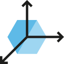
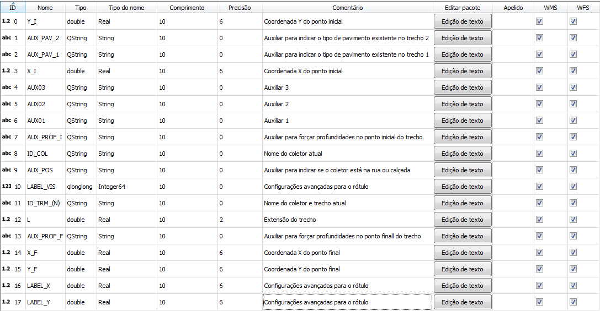
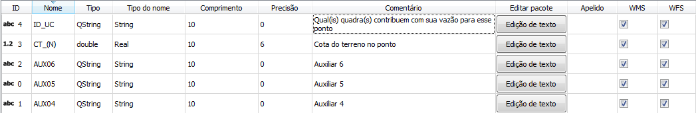

O plugin RedBasica foi desenvolvido com patrocínio do BID (Banco Interamericano de Desenvolvimento – Banco Interamericano de Desarrollo), AECID (Agência Espanhola de Cooperação Internacional para o Desenvolvimento- Agencia Española de Cooperación Internacional para el Desarrollo), LAIF/EU (Latin America Investment Facility – European Union-Facilidad de Inversión para America Latina) com a finalidade educativa e de promover o livre acesso a ferramentas para o projeto de sistemas condominiais de esgoto com a utilização de técnicas modernas de dimensionamento hidráulico. O software Red Basica é composto ainda de uma planilha de cálculo hidráulico, que complementa o plugin, igualmente de livre.
O complemento mescla funções básicas já presentes no QGIS (ferramentas de desenho, georreferenciamento, dentre outras) com outras funcionalidades criadas com a finalidade de facilitar e automatizar o projeto de uma rede coletora de esgoto.
As ferramentas adicionadas ao QGIS pelo complemento são:
Criação de camadas vetoriais (shapes) pré-configuradas para elaboração do projeto;
Nomeação dos coletores;
Vinculação entre as camadas vetoriais e seus atributos;
Estilos e rótulos personalizados para cada camada;
Checagem de eventuais inconsistências do projeto;
Janelas de exibição dos atributos do trecho selecionado e outras informações do projeto;
Exportação de dados do traçado realizado para cálculo hidráulico em planilha especialmente elaborada com essa finalidade (ou outro tipo de software externo de cálculo hidráulico);
Importação dos resultados do cálculo hidráulico realizado externamente de volta para o projeto;
Exibição do resultado do dimensionamento na planta de projeto;
Módulo de impressão do projeto.
Os dados são exportados do QGIS para um arquivo “.csv” contendo informações básicas para o dimensionamento, como: nomeação dos coletores, nomeação dos trechos, extensão de cada trecho, tipologia do traçado , cotas do terrenos, anotações auxiliares feitas pelo usuário durante o projeto, etc.
Para a utilização do complemento RedBasica de forma correta, o usuário deve seguir algumas recomendações:
Ao inserir uma nova camada deve-se informar o SRC que está sendo trabalhado;
Utilizar sempre um SRC de coordenadas planas, nunca geométricas;
Caso utilizada, a camada Raster de modelo digital do terreno deve estar no mesmo SRC da camada dos coletores;
Cada trecho pode receber em seu ponto de montante no máximo três coletores, ou seja, um trecho de montante do seu próprio coletor e mais dois outros coletores contribuindo nele;
Para inserir novos coletores/trechos recomenda-se ao usuário desabilitar a opção “Suprimir janela de formulário de atributo após criação” que encontra-se em Configurações > Opções> Criação de feições.

- Configurações básicas das camadas vetoriais (shapes) dos trechos e dos dispositivos de inspeção. Esse botão permite ao usuário escolher entre utilizar um shapefile de traçado já existente ou criar um novo. Além disso, permite escolher o nome das camadas tanto dos trechos quanto dos Dispositivos de Inspeção e seus respectivos atributos.
- Cria a shapefile e insere um nó em cada uma das extremidades de um trecho. Cada nó representa um dispositivo de inspeção (Caixa de Inspeção, Poço de Visita, Terminal de Limpeza, etc). Se o usuário tiver disponível e indicar um arquivo raster contendo um modelo digital do terreno essa função também captura automaticamente a cota do terreno para cada extremidade dos trechos.
- Salva qualquer alteração que foi feita na camada vetorial dos
trechos, tanto no desenho quanto nos atributos.
- Utilizado como uma verificação da consistência do traçado feito pelo usuário. Ao clicar no botão o QGIS selecionará todos os trechos que não estão ligados em nenhum outro coletor, ou seja, apenas os trechos finais do coletor devem ser selecionados, se qualquer outro trecho for selecionado quer dizer que não há conexão entre sua extremidade a jusante e o próximo coletor.
- Insere uma camada vetorial estilizada para que o usuário nomeie as quadras que fazem parte da área de interesse e indique quantas unidades de contribuição (lotes, casas, etc) lançam com suas vazões em algum trecho, tanto para inicio quanto para final do plano do projeto.
- É um auxilio para o usuário poder ver com clareza para qual lado está à declividade natural de cada quadra. É utilizado na fase anterior ao traçado para indicar qual o ponto preferencial pelo qual o coletor de esgoto deve passar em cada quadra.

- Também é um auxilio para o usuário. Serve para indicar os pontos definidos pelo projetista onde obrigatoriamente os coletores de esgoto devem passar, a escolha pode ser para evitar grandes profundidades, desviar de obstáculos, ruas asfaltadas, dentre outras.
- Alterna o rótulo e estilo tanto das camadas vetoriais trechos quanto de dispositivos de inspeção para o modo de traçado (edição) e de visualização (plotagem, impressão).
- Exporta os atributos de trechos e de dispositivos de inspeção para um arquivo “.csv” que pode ser utilizado em uma planilha auxiliar ou software de cálculos para dimensionar a rede coletora de esgoto.
- Importa para a camadas vetorial do QGIS os atributos de cada trecho que foram dimensionados externamente. Pode conter os diâmetros, profundidades, cotas, declividades, verificações hidráulicas, entre outras informações para cada trecho.
- Importa para a camadas vetorial do QGIS os atributos de cada dispositivo de inspeção que foram dimensionados externamente. Por exemplo, qual o órgão acessório utilizado, profundidades, cotas, etc.
O usuário pode escolher entre utilizar uma camada vetorial já existente (com um traçado de rede já feito) ou inserir uma nova e realizar seu traçado utilizando as ferramentas de desenho do QGIS.
Ao escolher por inserir uma camada vetorial nova, ele escolhe o nome e o complemento irá cria-la com seus atributos padrão, que estão listados abaixo junto com suas respectivas funções:

A camada vetorial de nós que representa os dispositivos de inspeção das duas extremidades de cada trecho são inseridas também com seus atributos padrão, listados abaixo junto com suas respectivas funções:

Modelagem Hidráulica: Leonardo Porto Nazareth
Analista de Conceito: Leonardo Porto Nazareth
Analistas de Programação: Fábio Machado Rogerio e Sergio Yamani
O software foi desenvolvido pela Intelisoft© para a empresa Diagonal© Transformação de Territórios.